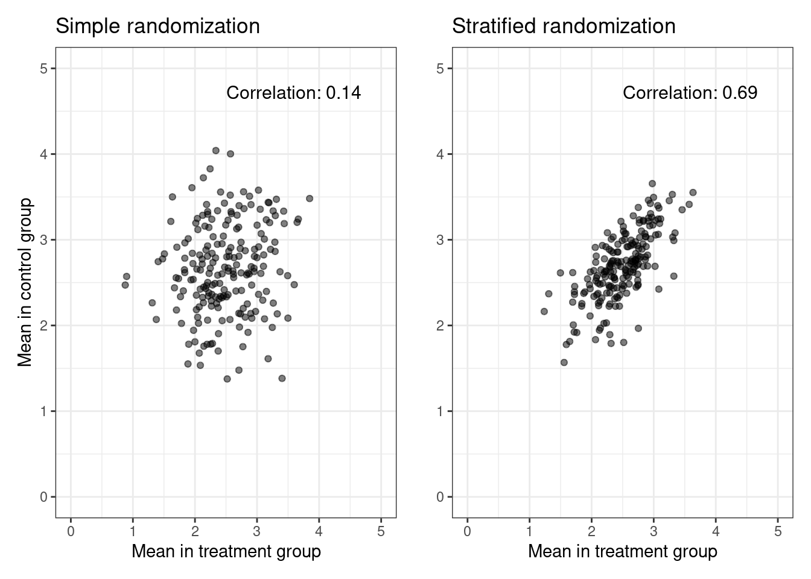

In my thesis I studied stratified randomization and it’s consequences for modelling. In this post I will try to distill my work. This first blog post describes stratified randomization and its conseqeunces for modelling.
Randomization
In a clinical trial, we want to single out the causal effect of treatment on the outcome. One way of ensuring that we can estimate a causal effect is by randomizing treatment to the study participants to balance the baseline covariates across treatment groups on average. That is, we aim for the two treatment groups to be comparable in all matters except treatment.
There are many ways of randomizing treatment, but the simplest is to flip a fair coin to allocate treatment each time a participant enrolls in a study. This works well for large studies, but for small studies, there can be a significant risk of getting an imbalanced treatment allocation.
To avoid this imbalance, we may enforce balance by using blocked randomization. Blocked randomization works by choosing an even number \(k\) and then allocating treatment by drawing a random permutation of \(k/2\) treated and \(k/2\) controls for every \(k\) participants enrolling in your study. The block size \(k\) is typically chosen to be 4, 6, 8, or randomized among these.
But even when treatment is forced to be balanced at all times, covariate imbalance across treatment is only guaranteed in expectation, and this may yield serious consequences for inference. In the extreme case, we may allocate all males to control and all females to treatment, but even in the non-extreme case, a large imbalance across treatment for a variable that is predictive of the outcome can mar the purpose of randomization and lead to unnecessary uncertainty. Again, this is mostly important for small trials or for large trials conducted at different sites.
Stratified Randomization
Stratified randomization solves the issue of covariate imbalance by stratifying the randomization onto levels of certain predictive baseline covariates. These levels are called strata. As an example, you might use blocked randomization within males and females separately to balance the distribution of sex across treatment, and typically, you only stratify on a few variables.
To observe the consequences of stratified randomization for modeling, we posit the following trial in which we expect sex to be predictive of the outcome and randomize patients within sex using blocked randomization. Let \(Y\) denote the continuous outcome, \(X\) denote sex, and \(A\) denote a binary treatment variable where we target a 1:1 allocation.
Inspired by (Kahan and Morris 2012) we posit the following DGP’s. For each \(i = 1, \dots, 50\), let
\[\begin{align*}
&X_i \sim \text{Bernoulli}(1/2)\\
&A_i \sim \text{Stratified block randomization on } X \text{ with a block size of 4} \\
&Y_i \mid X_i, A_i \sim \alpha + \beta_A A_i + \beta_X X_i
\end{align*}\]
In the figure below, we simulate \(N = 200\) datasets, each of size \(n = 50\) with parameters \((\alpha = 0, \beta_A = 0.2, \beta_X = 0.5)\), and plot the treatment specific means against each other.
Code
# Kahan, B. C., & Morris, T. P. (2011). Improper analysis of trials randomised# using stratified blocks or minimisation. Statistics in Medicine, 31(4),# 328–340. doi:10.1002/sim.4431 library(tidyverse)library(blockrand)library(patchwork)# Number of datasetsN =200# Size of each datasetn_size =50sim_data =function(n_size, rand_type =0, pX =0.5) {# Simulate binary baseline covariate / the balancing variable sex =rbinom(n_size, 1, pX)# Simple randomization A_simple =rbinom(n_size, 1, 0.5)# Stratified Randomization A_strat =rep(0,n_size) n1 =sum(sex ==1) n0 =sum(sex ==0) A_strat[sex ==1] =as.numeric(blockrand(n=n1, num.levels=2)$treatment, block.sizes =4)[1:n1]-1 A_strat[sex ==0] =as.numeric(blockrand(n=n0, num.levels=2)$treatment, block.sizes =4)[1:n0]-1# Simulate outcome outcome Y_simple =0.2* A_simple +5* sex +rnorm(n_size, sd =1) Y_strat =0.2* A_strat +5* sex +rnorm(n_size, sd =1)if (rand_type ==0) {c(mean(Y_simple[A_simple ==0]), c(mean(Y_simple[A_simple ==1]))) } else {c(mean(Y_strat[A_strat ==0]), c(mean(Y_strat[A_strat ==1]))) }}# Create a function to calculate correlation and annotate the plotannotate_corr =function(cor_val, x, y) {annotate("text", x = x, y = y, label =sprintf("Correlation: %.2f", cor_val), hjust =0, vjust =1, size =4)}# Simulate 200 datasets of size 50#set.seed(123)vec_simple =replicate(N, sim_data(n_size))vec_strat =replicate(N, sim_data(n_size, rand_type =1))# Collect data into tibblessimple_df =tibble(Y0 = vec_simple[1, ], Y1 = vec_simple[2, ]) strat_df =tibble(Y0 = vec_strat[1, ], Y1 = vec_strat[2, ]) # Estimate the correlationcor_simple =cor(simple_df$Y0, simple_df$Y1)cor_strat =cor(strat_df$Y0, strat_df$Y1)p_simple = simple_df %>%ggplot() +geom_point(aes(x = Y0, y = Y1), alpha =0.5) +theme_bw() +xlab("Mean in treatment group") +ylab("Mean in control group") +ggtitle("Simple randomization") +xlim(0, 5) +ylim(0, 5) +annotate_corr(cor_simple, 2.5, 4.8) p_strat = strat_df %>%ggplot() +geom_point(aes(x = Y0, y = Y1), alpha =0.5) +theme_bw() +xlab("Mean in treatment group") +ylab("") +ggtitle("Stratified randomization") +xlim(0, 5) +ylim(0, 5) +annotate_corr(cor_strat, 2.5, 4.8) p_simple + p_strat

Now we do the same, but change the distribution of the binary baseline covariate \(X\), i.e.,
The non-zero correlation between the treatment-specific means in the case of stratified randomization arises from the fact that we force an equal distribution of \(X\) within each treatment arm. If \(X\) denotes sex (0: man, 1: woman), and if, by chance, we observe more women than men, stratified block randomization ensures more women than men within each treatment group. Since being a woman has a strong positive effect on the outcome, both treatment means will be larger. This is not the case for simple randomization.
In the second plot, we simulate from the same DGP’s but change the variance of \(X\). Instead of \(p_X = 0.9\), we use \(p_X = 0.5\) as above. Note that the variance of \(X\) is, of course, \(p_X(1 - p_X)\) and is maximized when \(p_X = 0.5\). Now, we observe a lower correlation. This follows since the variance in the amount of women in each treatment group is overshadowed by the fixed individual variance.
Conclusion
The above shows that stratified randomization induces a dependence structure in the data. More specifically, the iid assumption of the observed data no longer holds, as the outcomes within the different strata are correlated. This poses a lot of problems, but since more information leads to more certainty, we can gain statistical efficiency by correctly modeling the randomization procedure. I will explore the consequences for modeling in the next part of my thesis distillation.
References
Kahan, Brennan C, and Tim P Morris. 2012. “Improper Analysis of Trials Randomised Using Stratified Blocks or Minimisation.”Statistics in Medicine 31 (4): 328–40.
Source Code
---title: "Thesis distillation: part 1"date: "2024-01-07"bibliography: biblo.bibformat: html: code-fold: true code-tools: true---In my thesis I studied stratified randomization and it's consequences formodelling. In this post I will try to distill my work. This first blog postdescribes stratified randomization and its conseqeunces for modelling. # RandomizationIn a clinical trial, we want to single out the causal effect of treatment on theoutcome. One way of ensuring that we can estimate a causal effect is byrandomizing treatment to the study participants to balance the baselinecovariates across treatment groups on average. That is, we aim for the twotreatment groups to be comparable in all matters except treatment.There are many ways of randomizing treatment, but the simplest is to flip a faircoin to allocate treatment each time a participant enrolls in a study. Thisworks well for large studies, but for small studies, there can be a significantrisk of getting an imbalanced treatment allocation.To avoid this imbalance, we may enforce balance by using blocked randomization.Blocked randomization works by choosing an even number $k$ and then allocatingtreatment by drawing a random permutation of $k/2$ treated and $k/2$ controlsfor every $k$ participants enrolling in your study. The block size $k$ istypically chosen to be 4, 6, 8, or randomized among these.But even when treatment is forced to be balanced at all times, covariateimbalance across treatment is only guaranteed in expectation, and this may yieldserious consequences for inference. In the extreme case, we may allocate allmales to control and all females to treatment, but even in the non-extreme case,a large imbalance across treatment for a variable that is predictive of theoutcome can mar the purpose of randomization and lead to unnecessaryuncertainty. Again, this is mostly important for small trials or for largetrials conducted at different sites.## Stratified RandomizationStratified randomization solves the issue of covariate imbalance by stratifyingthe randomization onto levels of certain predictive baseline covariates. Theselevels are called strata. As an example, you might use blocked randomizationwithin males and females separately to balance the distribution of sex acrosstreatment, and typically, you only stratify on a few variables.To observe the consequences of stratified randomization for modeling, we positthe following trial in which we expect sex to be predictive of the outcome andrandomize patients within sex using blocked randomization. Let $Y$ denote thecontinuous outcome, $X$ denote sex, and $A$ denote a binary treatment variablewhere we target a 1:1 allocation.Inspired by [@kahan2012improper] we posit the following DGP's. For each $i = 1, \dots, 50$, let\begin{align*}&X_i \sim \text{Bernoulli}(1/2)\\&A_i \sim \text{Bernoulli}(1/2)\\&Y_i \mid X_i, A_i \sim \alpha + \beta_A A_i + \beta_X X_i\end{align*}and \begin{align*}&X_i \sim \text{Bernoulli}(1/2)\\&A_i \sim \text{Stratified block randomization on } X \text{ with a block size of 4} \\&Y_i \mid X_i, A_i \sim \alpha + \beta_A A_i + \beta_X X_i\end{align*}In the figure below, we simulate $N = 200$ datasets, each of size $n = 50$ withparameters $(\alpha = 0, \beta_A = 0.2, \beta_X = 0.5)$, and plot the treatmentspecific means against each other.<center>```{r}#| warning: false# Kahan, B. C., & Morris, T. P. (2011). Improper analysis of trials randomised# using stratified blocks or minimisation. Statistics in Medicine, 31(4),# 328–340. doi:10.1002/sim.4431 library(tidyverse)library(blockrand)library(patchwork)# Number of datasetsN =200# Size of each datasetn_size =50sim_data =function(n_size, rand_type =0, pX =0.5) {# Simulate binary baseline covariate / the balancing variable sex =rbinom(n_size, 1, pX)# Simple randomization A_simple =rbinom(n_size, 1, 0.5)# Stratified Randomization A_strat =rep(0,n_size) n1 =sum(sex ==1) n0 =sum(sex ==0) A_strat[sex ==1] =as.numeric(blockrand(n=n1, num.levels=2)$treatment, block.sizes =4)[1:n1]-1 A_strat[sex ==0] =as.numeric(blockrand(n=n0, num.levels=2)$treatment, block.sizes =4)[1:n0]-1# Simulate outcome outcome Y_simple =0.2* A_simple +5* sex +rnorm(n_size, sd =1) Y_strat =0.2* A_strat +5* sex +rnorm(n_size, sd =1)if (rand_type ==0) {c(mean(Y_simple[A_simple ==0]), c(mean(Y_simple[A_simple ==1]))) } else {c(mean(Y_strat[A_strat ==0]), c(mean(Y_strat[A_strat ==1]))) }}# Create a function to calculate correlation and annotate the plotannotate_corr =function(cor_val, x, y) {annotate("text", x = x, y = y, label =sprintf("Correlation: %.2f", cor_val), hjust =0, vjust =1, size =4)}# Simulate 200 datasets of size 50#set.seed(123)vec_simple =replicate(N, sim_data(n_size))vec_strat =replicate(N, sim_data(n_size, rand_type =1))# Collect data into tibblessimple_df =tibble(Y0 = vec_simple[1, ], Y1 = vec_simple[2, ]) strat_df =tibble(Y0 = vec_strat[1, ], Y1 = vec_strat[2, ]) # Estimate the correlationcor_simple =cor(simple_df$Y0, simple_df$Y1)cor_strat =cor(strat_df$Y0, strat_df$Y1)p_simple = simple_df %>%ggplot() +geom_point(aes(x = Y0, y = Y1), alpha =0.5) +theme_bw() +xlab("Mean in treatment group") +ylab("Mean in control group") +ggtitle("Simple randomization") +xlim(0, 5) +ylim(0, 5) +annotate_corr(cor_simple, 2.5, 4.8) p_strat = strat_df %>%ggplot() +geom_point(aes(x = Y0, y = Y1), alpha =0.5) +theme_bw() +xlab("Mean in treatment group") +ylab("") +ggtitle("Stratified randomization") +xlim(0, 5) +ylim(0, 5) +annotate_corr(cor_strat, 2.5, 4.8) p_simple + p_strat```</center>Now we do the same, but change the distribution of the binary baseline covariate$X$, i.e., \begin{align*}&X \sim \text{Bernoulli}(0.9)\\\end{align*}This yields<center>```{r}#set.seed(123)vec_simple =replicate(N, sim_data(n_size, pX =0.9))vec_strat =replicate(N, sim_data(n_size, rand_type =1, pX =0.9))# Collect data into tibblessimple_df =tibble(Y0 = vec_simple[1, ], Y1 = vec_simple[2, ]) strat_df =tibble(Y0 = vec_strat[1, ], Y1 = vec_strat[2, ]) # Estimate the correlationcor_simple =cor(simple_df$Y0, simple_df$Y1)cor_strat =cor(strat_df$Y0, strat_df$Y1)p_simple = simple_df %>%ggplot() +geom_point(aes(x = Y0, y = Y1), alpha =0.5) +theme_bw() +xlab("Mean in treatment group") +ylab("Mean in control group") +ggtitle("Simple randomization") +ylim(2.5, 6.5) +xlim(2.5, 6.5) +annotate_corr(cor_simple, 4.5, 5.8) p_strat = strat_df %>%ggplot() +geom_point(aes(x = Y0, y = Y1), alpha =0.5) +theme_bw() +xlab("Mean in treatment group") +ylab("") +ggtitle("Stratified randomization") +ylim(2.5, 6.5) +xlim(2.5, 6.5) +annotate_corr(cor_strat, 4.5, 5.8) p_simple + p_strat```</center>The non-zero correlation between the treatment-specific means in the case ofstratified randomization arises from the fact that we force an equaldistribution of $X$ within each treatment arm. If $X$ denotes sex (0: man, 1:woman), and if, by chance, we observe more women than men, stratified blockrandomization ensures more women than men within each treatment group. Sincebeing a woman has a strong positive effect on the outcome, both treatment meanswill be larger. This is not the case for simple randomization.In the second plot, we simulate from the same DGP's but change the variance of$X$. Instead of $p_X = 0.9$, we use $p_X = 0.5$ as above. Note that the varianceof $X$ is, of course, $p_X(1 - p_X)$ and is maximized when $p_X = 0.5$. Now, weobserve a lower correlation. This follows since the variance in the amount ofwomen in each treatment group is overshadowed by the fixed individual variance.# ConclusionThe above shows that stratified randomization induces a dependence structure inthe data. More specifically, the iid assumption of the observed data no longerholds, as the outcomes within the different strata are correlated. This poses alot of problems, but since more information leads to more certainty, we can gainstatistical efficiency by correctly modeling the randomization procedure. I willexplore the consequences for modeling in the next part of my thesisdistillation.